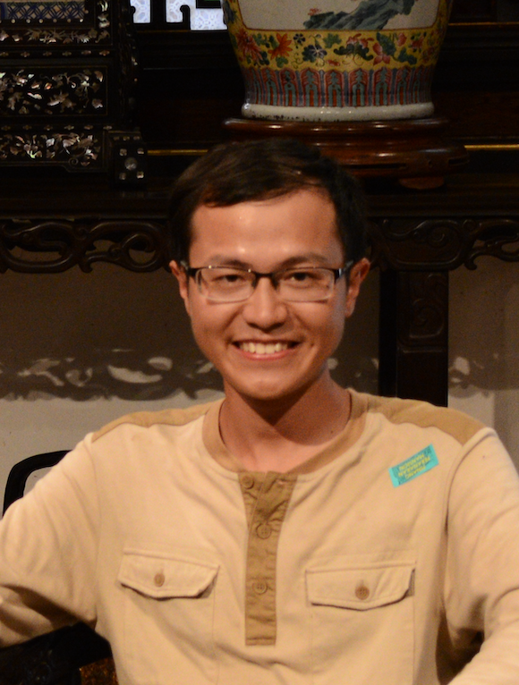

|
 |
An-Bao Xu |
An-Bao Xu is currently an Associate Professor with the College of Mathematics and Physics, Wenzhou University. He received the Ph.D. degree from Hunan University, Changsha, China, in 2017. From 2014 to 2016, he was an exchange Ph.D. student with the Department of Mathematics and Statistics, Auburn University, USA, and he was also a visiting student at the Institute of Atmospheric Physics, Chinese Academy of Sciences (2016.11–2017.05). He has led two research projects, respectively funded by the National Natural Science Foundation of China (Youth Program) and the National Scholarship for Building High Level University. His research interests center on the design and analysis of algorithms for matrix and tensor recovery (including deep learning approaches), reconstruction algorithms for compressed sensing, and solutions to constrained matrix equations, with applications in image and video processing and signal compression.
Ph.D., Computational Mathematics, Hunan University, China (2017),
M. Sc., Computational Mathematics, Guilin University of Electronic Technology, China (2013),
B. Sc., Mathematics, Hubei University of Science and Technology, China (2010).
Visiting student, Institute of Atmospheric Physics, Chinese Academy of Sciences (2016.11-2017.05),
Exchange Ph.D. student, Mathematics, Auburn University, USA (2014.08-2016.08),
-This visit is supported by a grant of the China Scholarship Council.
Jiahao Guo, An-Bao Xu, High-performance privacy-preserving matrix completion for trajectory recovery, arXiv preprint arXiv:2405.05789, 2024. arXiv: 2405.05789
Jiqian Zhao, An-Bao Xu, Infrared small target detection via tensor L2,1-norm minimization and ASSTV regularization: A novel tensor recovery approach, arXiv preprint arXiv:2402.18003, 2024. arXiv: 2402.18003
Qianxi Wu, An-Bao Xu, A biased deep tensor factorization network for tensor completion, arXiv preprint arXiv:2105.09629, 2021. arXiv: 2105.09629
An-Bao Xu, Tensor completion via a low-rank approximation pursuit, arXiv preprint arXiv:2004.08872, 2020. arXiv: 2004.08872
The 8th International Conference on Matrix Analysis and Application (ICMAA 2019), University of Nevada, Reno, USA, July 15-18, 2019.
-Contributed Talk: Tensor completion via low-rank approximation pursuit.
2018 SIAM Conference on Applied Linear Algebra (SIAM-ALA18),Hong Kong Baptist University,Hong Kong, China,May 4-8,2018.
-Contributed Talk: Parametrized quasi-soft thresholding operator for compressed sensing and matrix completion.
2017 Workshop on Matrices and Operators (MAO), Changsha, Hunan, China, June 9-12, 2017.
-Contributed Talk: Varied Parametric Quasi-Soft Thresholding for Compressed Sensing.
2016 SIAM Conference on Imaging Science (SIAMIS16), Albuquerque, New Mexico, USA, May 23-26, 2016.
-Contributed Talk: Low-Rank Approximation Pursuit for Matrix and Tensor Completion.
-Travel Support from SIAM Student Travel Fund.
The 40th SIAM Southeastern Atlantic Section Conference (SIAM-SEAS), University of Georgia,Athens, Georgia, USA, March 12-13, 2016.
-Contributed Talk: Optimal Solutions for Solvable and Unsolvable Inhomogeneous Linear Matrix Equations of Generalized Sylvester Type.
{kind=link}